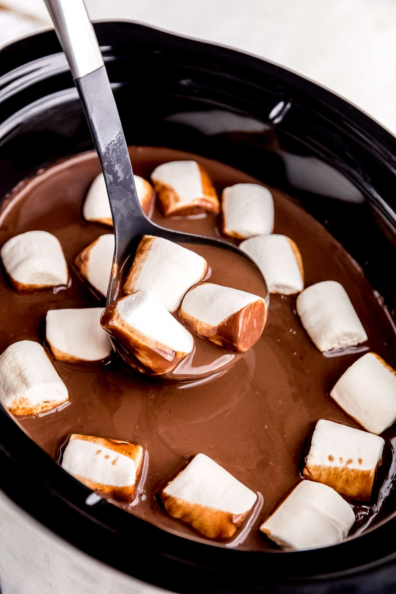

Slow Cooker Hot Chocolate

Description
Can you think of anything more comforting, more indulgent or more of a treat than a cup of
creamy, rich, smooth and sumptuous hot chocolate? Well here is a recipe for the very BEST
Slow Cooker Hot Chocolate.
Ingredients
This is for 6 servings at 115kcal each:
- 30g cocoa powder
- 1L whole milk
- 300ml single cream
- 200g milk chocolate
- 2 tsp vanilla extract
Steps
- Mix cocoa powder in a small bowl with enough milk to make a smooth paste
- Add this paste along with all of the ingredients in the slow cooker, no lumps left
- Put the lid on and cook on LOW for 1-2hrs, stirring occasionally or untill the hot chocolate is thick and smooth.